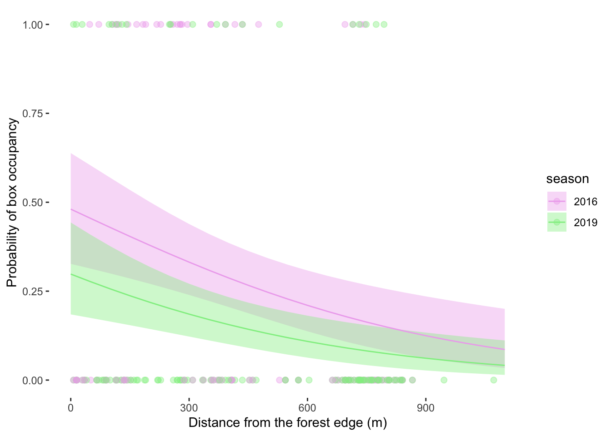

library(tidyverse) # general use
library(here) # file organization
library(janitor) # cleaning data frames
library(MuMIn) # model selection
library(ggeffects) # getting model predictions
library(DHARMa) #simulate residuals
sst <- read_csv(here("data", "SST_update2023.csv")) #read in Santa Barbara SST data in data folder
bird_data <- read_csv(here("data", "occdist.csv")) #read in data for Problem 3 from data folderENVS 193DS Final
Packages and Data
Problem 1.
a.
In part 1, they used a Pearson’s r test. In part 2, they used an analysis of variance (one-way ANOVA) test.
b.
One additional piece of information that should be included is the significance level that was used to compare the p-value. This would add useful additional context because it provides more transparency to the test that was done and tells how strict the test was. Another test that should be included is Tukey’s HSD. This would be useful because it would explain which sources are actually statistically different in mean nitrogen load from each other when you compare them. The ANOVA test result says that at least one group is significantly different, but not which one(s).
c.
Our results suggest that there is a correlation between distance from headwater and annual total nitrogen load. We rejected the null hypothesis that there is no correlation between distance from headwater (km) and annual total nitrogen load (kg/year) (Pearson’s r = correlation coefficient, p = 0.03, \(\alpha\) = significance level).
Our results suggest that average nitrogen load differs between sources including urban land, atmospheric deposition, fertilizer, wastewater treatment, and grasslands. We rejected the null hypothesis that there is no difference in average nitrogen load (kg year-1) between sources (n = sample sizes) (urban land, atmospheric deposition, fertilizer, wastewater treatment, and grasslands) (one-way ANOVA, F(among groups df, within groups df) = F-statistic, p = 0.02, \(\alpha\) = significance level). We found a ___ effect (\(\eta^2\) = effect size) of nitrogen source on nitrogen load. On average, source type tended to have smaller/larger nitrogen loads than source type (Tukey’s HSD).
Problem 2.
a.
sst_clean <- sst |> #create new sst_clean dataframe from sst dataframe
select(-site, -latitude, -longitude) |> #remove site, latitude, and longitude columns
filter(date > as_date("2017-12-31")) |> #only include dates after 2017
mutate(month = factor(month(date, label = TRUE, abbr = TRUE), #extract month from the date column and set as factor
levels = c("Jan", "Feb", "Mar", "Apr", "May", "Jun",
"Jul", "Aug", "Sep", "Oct", "Nov", "Dec")), #set month as ordered factor with these levels
year = factor(as.character(year(date)), #set year as factor and extract year from the date column
levels = c("2018", "2019", "2020", "2021", "2022", "2023"))) |> #set levels of year factor
group_by(year, month) |> #group by months and year
summarize(mean_monthly_sst = mean(temp)) |> #calculate the monthly mean sst
ungroup() #ungroup slice_sample(sst_clean, n = 5) #display 5 rows from sst_clean# A tibble: 5 × 3
year month mean_monthly_sst
<fct> <ord> <dbl>
1 2020 May 14.6
2 2018 Jan 15.0
3 2020 Jun 15.9
4 2023 Mar 12.8
5 2020 Aug 17.8str(sst_clean) #display structure of sst_cleantibble [72 × 3] (S3: tbl_df/tbl/data.frame)
$ year : Factor w/ 6 levels "2018","2019",..: 1 1 1 1 1 1 1 1 1 1 ...
$ month : Ord.factor w/ 12 levels "Jan"<"Feb"<"Mar"<..: 1 2 3 4 5 6 7 8 9 10 ...
$ mean_monthly_sst: num [1:72] 15 14.3 13.5 12.8 13.6 ...b.
ggplot(data = sst_clean, #use the sst_clean dataframe
aes(x = month, #make the x-axis the month
y = mean_monthly_sst), #make the y-axis the mean monthly sst
color = year) + #color by the year
geom_point(aes(color = year)) + #add points and color by year
geom_line(aes(group = year, color = year)) + #add a line for each year and color by year
labs(x = "Month", #rename the x-axis
y = "Mean monthly sea surface temperature (°C)", #rename the y-axis
color = "Year") + #name the legend
theme(panel.background = element_blank(), #make the panel background blank
legend.position = c(0.05, 0.95), #position the legend inside the plot
panel.grid = element_blank(), #remove the gridlines
legend.justification = c("left", "top"), #align the legend to top left
panel.border = element_rect(color = "black", fill = NA, linewidth = 0.5)
) + #add a panel border
scale_color_manual(values = c("2018" = "#deebf7", #change color of 2018 line
"2019" = "#c6dbef", #change color of 2019 line
"2020" = "#9ecae1", #change color of 2020 line
"2021" = "#6baed6", #change color of 2021 line
"2022" = "#3182bd", #change color of 2022 line
"2023" = "#08519c")) #change color of 2023 lineProblem 3.
a.
In this data set, 1s mean there is Swift Parrot nest occupancy and 0s mean there is no nest occupancy by a Swift Parrot. The 1s and 0s are a measure of if the nest is occupied by a Swift Parrot or not.
b.
Swift Parrots are very selective about where they nest, whereas Tree Martins and Common Starlings are much less selective.
c.
2016 and 2019 are the two years that the authors refer to as “seasons.” In 2016, they deployed nest boxes at a Swift Parrot breeding site where a mast tree flowering event triggered nesting, and they did the same in 2019 when same mast tree flowering event occurred. The 2016 season is referred to as “newly deployed” and the 2019 season is referred to as “established.”
d.
| Model number | Season | Distance to forest edge | Model description |
|---|---|---|---|
| 0 | no predictors (null model) | ||
| 1 | X | X | all predictors (full model) |
| 2 | X | season | |
| 3 | X | distance to forest edge |
e.
bird_data_clean <- bird_data |> #create new bird_data_clean dataframe using bird_data dataframe
clean_names() |> #clean the column names
mutate(season = as_factor(season)) #make sure season is a factor
# model 0: null model
model0 <- glm( #create model object using linear model function
sp ~ 1, # formula for null model
data = bird_data_clean, # using bird_data_clean data frame
family = "binomial" #sp is binomial distribution
)
# model 1: all predictors
model1 <- glm( #create model object using linear model function
sp ~ season + edge_distance, #sp is response and season + edge distance are predictors
data = bird_data_clean, # using bird_data_clean data frame
family = "binomial" #sp is binomial distribution
)
# model 2: season
model2 <- glm( #create model object using linear model function
sp ~ season, #sp is response and season is predictor
data = bird_data_clean, # using bird_data_clean data frame
family = "binomial" #sp is binomial distribution
)
# model 3: edge distance
model3 <- glm( #create model object using linear model function
sp ~ edge_distance, #sp is response and edge distance is predictor
data = bird_data_clean, # using bird_data_clean data frame
family = "binomial" #sp is binomial distribution
)f.
par(mfrow = c(2,2)) #display output in 2 by 2 format
plot(simulateResiduals(model0)) #model 0 diagnostics
plot(simulateResiduals(model1)) #model 1 diagnostics
plot(simulateResiduals(model2)) #model 2 diagnostics
plot(simulateResiduals(model3)) #model 3 diagnostics
g.
AICc( #using Akaike’s Information Criterion (AIC) function
model0, #check model 0
model1, #check model 1 - lowest AIC, best model
model2, #check model 2
model3) |> #check model 3
arrange(AICc) #arranging output in descending order of AIC df AICc
model1 3 226.3133
model3 2 229.6716
model2 2 236.3744
model0 1 238.8318summary(model1) #summarize model 1
Call:
glm(formula = sp ~ season + edge_distance, family = "binomial",
data = bird_data_clean)
Coefficients:
Estimate Std. Error z value Pr(>|z|)
(Intercept) -0.0774902 0.3293209 -0.235 0.813974
season2019 -0.7791985 0.3390296 -2.298 0.021544 *
edge_distance -0.0020782 0.0006226 -3.338 0.000843 ***
---
Signif. codes: 0 '***' 0.001 '**' 0.01 '*' 0.05 '.' 0.1 ' ' 1
(Dispersion parameter for binomial family taken to be 1)
Null deviance: 236.81 on 226 degrees of freedom
Residual deviance: 220.21 on 224 degrees of freedom
AIC: 226.21
Number of Fisher Scoring iterations: 4The best model that predicts box occupancy as determined by Akaike’s Information Criterion (AIC) includes season and edge distance (AICc = 226.3, df = 3).
h.
model1_predictions <- ggpredict(model1, # model object
terms = c("edge_distance", "season")) |> # listing predictors edge distance and season
rename(
edge_distance = x, #rename column x to edge distance
season = group # rename column group to season
)ggplot(bird_data_clean, #use bird_data_clean dataframe
aes(x = edge_distance, #set x-axis to edge_distance
y = sp, #set y-axis to sp
color = season)) + #color by season
geom_point(size = 2, #change size of points
alpha = 0.4) + #transparency of points
geom_ribbon(data = model1_predictions, #use model1_predictions dataframe
aes(x = edge_distance, #x-axis is edge_distance
y = predicted, #y-axis is predicted probability
ymin = conf.low, #lower confidence level
ymax = conf.high, #upper confidence level
fill = season), #
alpha = 0.4, #change transparency of ribbons
color = NA) + #remove ribbon border
geom_line(data = model1_predictions, #use model1_predictions dataframe
aes(x = edge_distance, #x-axis is edge_distance
y = predicted, #y-axis is predicted probability
color = season)) + #color by season
scale_color_manual(values = c("2016" = "plum2", "2019" = "lightgreen")) + #change color of 2016 and 2019 seasons for lines and points
scale_fill_manual(values = c("2016" = "plum2", "2019" = "lightgreen")) + #change color of 2016 and 2019 seasons for ribbon
labs(
x = "Distance from the forest edge (m)", #change x-axis label
y = "Probability of box occupancy", #change y-axis label
) +
theme(panel.grid = element_blank(), #remove the gridlines
panel.background = element_blank()) #make the panel background blank
i.
Figure 1. The probability of Swift Parrot box occupancy decreases as distance from forest edge increases. Points represent observations of box occupancy at distances from the forest edge (m) in 2016 (n = 104) and 2019 (n = 123). Lines represent the predicted probability of Swift Parrot box occupancy at a given distance from the forest edge for each season. The shaded regions indicate the 95% confidence intervals. Colors represent the season (purple: 2016, green: 2019). Source: Stojanovic, Dejan et al. (2021). Do nest boxes breed the target species or its competitors? A case study of a critically endangered bird [Dataset]. Dryad. https://doi.org/10.5061/dryad.83bk3j9sb.
j.
ggpredict( #using ggpredict function
model1, #use model 1 to predict
terms = c("edge_distance [0]", "season [2016]") #formula = predictor [value], 0 m from forest edge in 2016 season
)# Predicted probabilities of sp
edge_distance | Predicted | 95% CI
--------------------------------------
0 | 0.48 | 0.33, 0.64ggpredict( #using ggpredict function
model1, #use model 1 to predict
terms = c("edge_distance [900]", "season [2016]") #formula = predictor [value], 900 m from forest edge in 2016 season
)# Predicted probabilities of sp
edge_distance | Predicted | 95% CI
--------------------------------------
900 | 0.12 | 0.06, 0.24ggpredict( #using ggpredict function
model1, #use model 1 to predict
terms = c("edge_distance [0]", "season [2019]") #formula = predictor [value], 0 m from forest edge in 2019 season
)# Predicted probabilities of sp
edge_distance | Predicted | 95% CI
--------------------------------------
0 | 0.30 | 0.18, 0.44ggpredict( #using ggpredict function
model1, #use model 1 to predict
terms = c("edge_distance [900]", "season [2019]") #formula = predictor [value], 900 m from forest edge in 2019 season
)# Predicted probabilities of sp
edge_distance | Predicted | 95% CI
--------------------------------------
900 | 0.06 | 0.03, 0.13k.
Swift Parrots tend to occupy their nest boxes more often when the nest box is closer to the forest edge (Figure 1). During the newly established season, if the nest box is at the forest edge (0 m), the predicted probability of occupancy is 0.48 (95% CI [0.33, 0.64]), and if the nest box is farther away from the forest edge (900 m), the predicted probability of occupancy is 0.12 (95% CI [0.06, 0.24]). During the established season, if the nest box is at the forest edge (0 m), the predicted probability of occupancy is 0.30 (95% CI [0.18, 0.44]), and if the nest box is farther away from the forest edge (900 m), the predicted probability of occupancy is 0.06 (95% CI [0.03, 0.13]). The probability of box occupancy decreases as the distance from the forest edge (m) increases. Tree martins have the opposite relationship between edge distance and nest occupancy. and given that they occupied the most number of boxes in the study, this explains the inverse relationship between edge distance and nest occupancy for Swift Parrots.
Problem 4.
a.
- How are the visualizations different from each other in the way you have represented your data?
The visualizations are very different from each other in the way that I have represented my data. My visualizations from homework 2 were a box and jitter plot and a line graph, while my visualization from homework 3 was an artistic visualization, with the data represented by drawings of brain waves and colors. The visualizations in homework 2 displayed the data in a very scientific way without evoking much emotion, while the visualization in homework 3 shows the data in a creative and unique way. Also, in homework 2, I used sleep quality and if I went on my phone before bed as predictors of hours slept, while in homework 3 I used class day as a predictor of hours slept.
- What similarities do you see between all your visualizations?
Between all of my visualizations, the number of hours slept is the response variable, meaning that all of my visualizations are visualizing how various predictors predict hours slept. They each communicate patterns in my sleep behavior. Both the box-and-jitter plot and the affective visualization use color to communicate differences in the categorical variables of class day and phone usage. These two visualizations also are similar in their use of a categorical predictor variable. The box-and-jitter plot and the line graph are similar in their formal portrayal of the data.
- What patterns (e.g. differences in means/counts/proportions/medians, trends through time, relationships between variables) do you see in each visualization? Are these different between visualizations? If so, why? If not, why not?
In my visualizations from homework 2, my mean hours slept is higher on nights that I don’t go on my phone before bed, and as my sleep quality increases, my number of hours slept also increases. In my visualization from homework 3, there seems to be a trend where I sleep more hours on nights that I don’t have class. These are all different patterns between my visualizations since each visualization has a different predictor.
- What kinds of feedback did you get during week 9 in workshop or from the instructors? How did you implement or try those suggestions? If you tried and kept those suggestions, explain how and why; if not, explain why not.
My feedback included filling in the blank space between the brain waves on my drawing, which I decided not to do because I wanted to keep the colors and space simple so that the data is easier to focus on. Another suggestion included adding units (“hours slept”) to the numbers in my legend so that it is complete, which I did end up adding since this seemed essential to the understanding of my piece. It was also suggested to make half of the brain class days and the other half non-class days, but I decided not to do this since I had many more class days than non-class days, so one side of the paper would have a lot more blank space than the other. The last suggestion I got was to include the key on the same side of the page as the drawing, which I decided against since this would make the drawing more cluttered. I liked the format of Giogia Lupi and Stefanie Posavec’s Dear Data project where they had a key on a separate page.